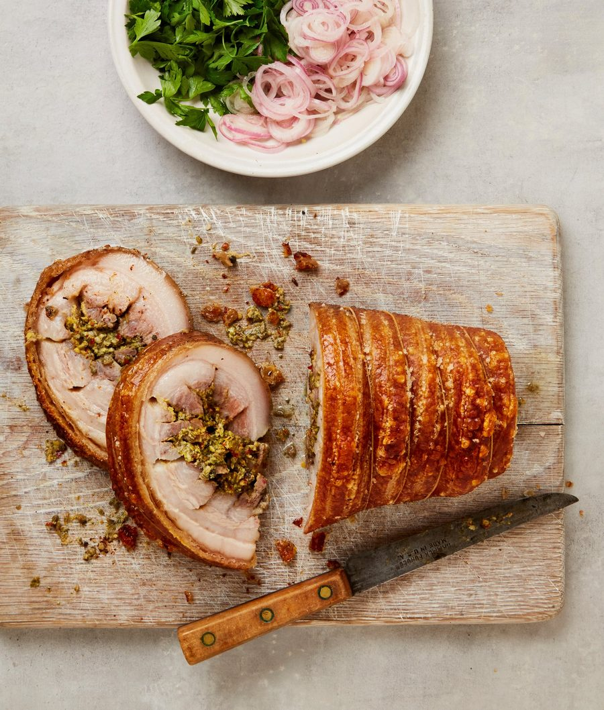

Oregano stuffed porchetta with pickled shallots and herbs

This popular Italian import is a make-ahead project that is well worth the time and effort. The deeply savoury pork and salty, crisp skin has the makings of a great meal, and there’ll be plenty left over for delicious sandwiches. If you like, ask the butcher to score the skin for you.
For the stuffing
For the pork belly
For the pickled shallots and herbs
Put all the stuffing ingredients bar the lemon juice and oil in the small bowl of a food processor, add a teaspoon and three-quarters of salt, and blitz until coarsely chopped.
Next, prepare the pork. Remove any string, then tightly roll the shortest end of the pork over on itself, so it’s like a swiss roll – there shouldn’t be any skin in the middle of the swirl, so unroll and trim off any excess skin, if need be. Put the pork flesh side down on a work surface and pat the skin dry with kitchen paper. Using a metal skewer, lightly puncture the skin all over at ¼cm intervals, making sure not to pierce all the way through to the flesh. Using a very sharp knife, carefully score the skin lengthwise at ½cm intervals.
Turn over the pork and score the flesh diagonally at 3cm intervals, making sure not to cut all the way through to the fat.
In a small bowl, mix a tablespoon of the oil with the mustard and a teaspoon of salt, rub this into the pork flesh, then smooth the herb stuffing on top.
To roll the pork, start at the shorter end and roll it up tightly again like a swiss roll. Using butcher’s string, tie the roll very tightly in the middle, then about 1cm from each end. Tie the roll six more times, to give you nine ties in total, then put it on a rack in a baking dish. Pat the skin dry again, then refrigerate overnight, or for up to two days (this helps the skin dry out and ensures it goes perfectly crisp when roasting, and also marinates the meat deeply, too).
Remove the pork dish from the fridge at least a hour before cooking, so it comes back up to room temperature.
Heat the oven to 170C (150C fan)/325F/gas 3. Rub the remaining tablespoon of oil and a half-teaspoon of salt all over the skin, then roast for two and a half hours, rotating the tray every hour so it cooks evenly, by which time the skin should be lightly golden.
Turn up the oven to 220C (200C fan)/425F/gas 7 and ventilate the kitchen. Roast the joint for another 20-25 minutes, rotating it once halfway, until the skin is golden, bubbling in places and crisp. Don’t be alarmed by any smoke, because this is caused by the fat running off the skin (if, however, your oven is emitting too much smoke, remove the pork dish, set aside for 15 minutes, then return to the oven.
Meanwhile, make the pickled shallots. Mix the lemon juice, shallots, sugar and three-quarters of a teaspoon of salt in a small bowl. Arrange a pile of parsley in a small bowl and put the shallots and their pickling liquid alongside.
Put the porchetta on a board, cut into 2½cm-thick slices and serve with the salad bowl alongside.